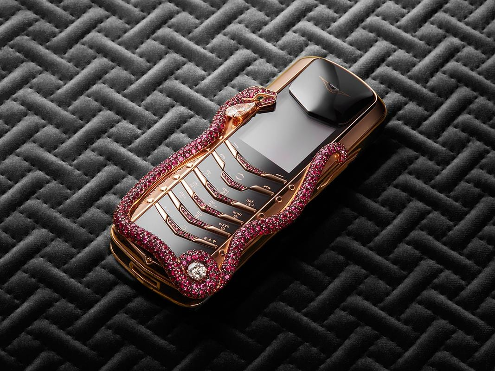

Vertu Signature Touch

手工打造的奢华手机，蓝宝石屏幕配私人管家服务。
客观评测
Signature Touch 的硬件是 2014 年的中上水准：骁龙 801、2GB 内存、1300 万像素镜头，参数远不值七万元售价。真正的卖点是材质与服务：4.7 英寸屏幕覆盖整块蓝宝石玻璃，钛金属边框由英国工匠手工镶嵌小牛皮，每台刻有工匠签名。附赠的私人管家服务号称 24 小时全球礼宾，为其目标客户代订稀缺资源。
主观点评
Vertu 手机握起来确实与众不同——沉、凉、扎实，皮质随时间养出专属光泽。它从来不是数码产品，而是戴在口袋里的身份符号，与百达翡丽的逻辑如镜像两面：买的不是性能，是确定性与排他感。品牌破产后，它成了一代奢华手机的墓志铭，提醒世人科技业从不为奢侈品梦买单。
优点与不足
- 蓝宝石玻璃与钛金属用料奢华，抗刮性远超普通手机
- 手工皮革工艺与英国原产，做工无可挑剔
- 私人管家礼宾服务提供酒店预订等专属体验
- 硬件配置仅相当于同期中端旗舰，溢价极高
- 2017 年品牌破产，服务与维修体系已难以为继
参数规格
| 屏幕 | 4.7 英寸 1080p，蓝宝石玻璃面板 |
|---|---|
| 处理器 | 高通骁龙 801 |
| 内存 | 2GB RAM |
| 存储 | 64GB |
| 摄像头 | 后置 1300 万像素，前置 210 万像素 |
| 材质 | 钛金属机身＋手工小牛皮 |
| 音响 | Bang & Olufsen 调校扬声器 |
| 服务 | Vertu 私人管家 24 小时礼宾服务 |
| 系统 | 安卓 4.4 |
| 电池 | 2275mAh |
| 产地 | 英国手工组装 |
| 重量 | 约 192g |